MT 07¶
MINTERFASES Y APLICACIONES¶
TECNOLOGÍA Y FABRICACIÓN

❝La interfaz no es un objeto sino un proceso, el lugar de la interacción. No es un simple adorno (…) que se añade al final para que el hardware sea más bonito; es el dispositivo de interacción que vincula a los actores humanos y tecnológicos ❞. [ Carlos A. Scolari . Universitat Pompeu Fabra . Barcelona ]
Este Módulo Técnico 07 enmarcado en la fabricación digital nos introdujo en las Interfases y aplicaciones en el contexto de los microcontroladores electrónicos, para el IoT (Internet de las Cosas). Con el objetivo de comprender la utilidad y funcionamiento básica de una interfaz electrónica, como un sistema que facilita la comunicación (ver estados/variables) e interacción (ejecutar acciones) entre diferentes dispositivos electrónicos en la transmisión de señales de datos. Frente a un área ajena a mi formación (la ingeniería electrónica), me desafié un paso más, intentando profundizar en el tema, y a partir de lectura/literatura afín, (e infinidad de dudas liberadas a través de consultas y razonamiento conjunto con la IA), desarrollé este esquema sintético para comprender la configuración de la UI + UX en el ECOSISTEMA ELECTRÓNICO ~ ESP32:
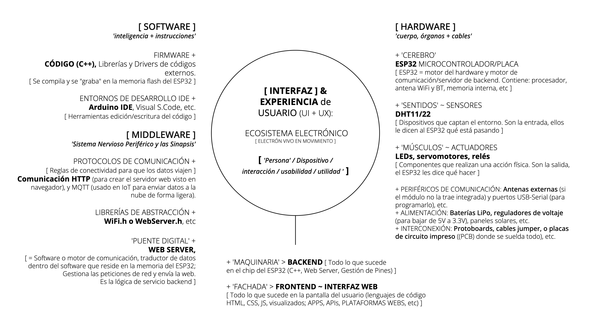
ECOSISTEMA ELECTRÓNICO BASADO EN ESP32: Un ecosistema basado en ESP32 se compone de hardware (el chip ESP32, sensores, actuadores y PCB) y software (firmware, IDEs y protocolos). El hardware maneja la lógica física y conectividad RF, mientras el software gestiona la ejecución de tareas, Wi-Fi/Bluetooth y la interacción del usuario. En la interacción entre el Hardware y Software: El código creado en el IDE (Software) se compila y carga en la memoria del módulo ESP32 (Hardware). Este software utiliza las librerías para controlar en los microcontroladores los pines físicos GPIOs (Hardware), enviando datos a través de Wi-Fi a Webs Servers y plataforma-backend/frontend (como, Blynk IoT, Node-RED (Dashboards), etc). [ VER LINKS DE INTERÉS ~ pie pág.] + info [ Interfaz IoT en Microcontroladores ] + info [ Interfaz electrónica ]
HERRAMIENTAS PRÁCTICAS APLICADAS . MT07¶
INTERFACES & APPLICATIONS ~ LATU¶
En este marco, la práctica presencial en el LATU-UTEC constó de una breve sesión técnica de ensayos experimentales sencillos y analogías cotidianas, a través de una dinámica bajo la consigna/objetivo siguiente:
❝Diseñar e implementar una interfaz de control (software) para operar uno o más actuadores (hardware) conectados al ESP32. Cada equipo podrá elegir libremente qué actuador utilizar, por ejemplo: LED, servo, buzzer, relé, motor u otro similar trabajado en clase.❞
DINÁMICA 1 . ESP32 ~ INTERFAZ USO ~ BLYNK . Arduino ESP32 Connectivity . sketch 1¶
OBJETIVO La dinámica 1 se focalizó en montaje de una INTERFAZ DE USO (UI) a través de la ‘BLYNK‘(interfaz virtual de control y plataforma de software: APP + API + CLOUD), mediante la guía asistida de la AI Google Gemini Web (como co-creador del sistema circuital e instrucciones para la ‘movilidad energética’ y transferencia de datos electrónicos):
Conectar la placa ESP32 a Blynk y controlar un LED incorporado con conexión a la red wifi > Prender y apagar un LED integrado en el módulo microcontrolador SP32.
Resolverse mediante alguna la Interfaz a elección de las siguientes opciones, o una alternativa equivalente: + Interfaz física, ej. una pantalla junto con un encoder rotativo c/ pulsador integrado + Node-RED + Blynk + HTML + JavaScript servido desde el propio ESP32 + Cualquier otra interfaz que permita interactuar de forma clara con el sistema
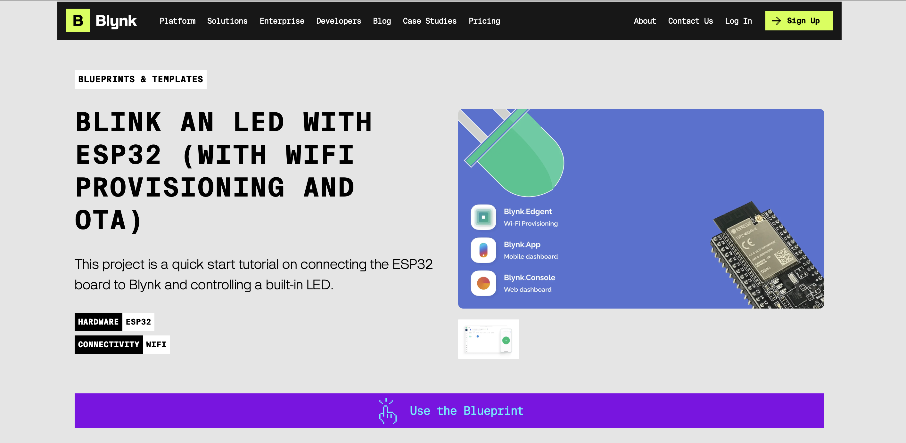
+ info [ BLYNK ~ blueprints/blink an led with ESP32 ] + info [ BLYNK ~ BLUEPRINTS & TEMPLATES ]
PROMPT AI + PROCEDIMIENTO . #1
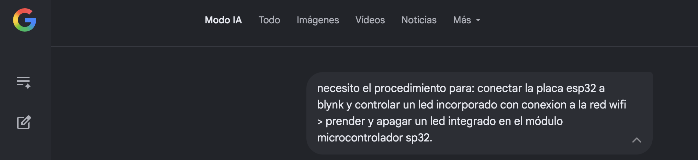
PASO 1 ~ BLYNK WEB CONSOLE SETTING
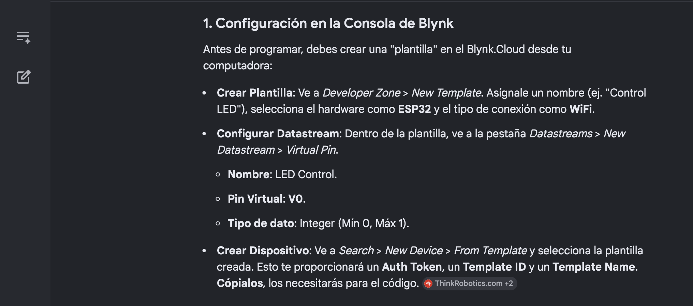
P 1.1 ~ DEVELOPER ZONE . (Blynk Web Console)
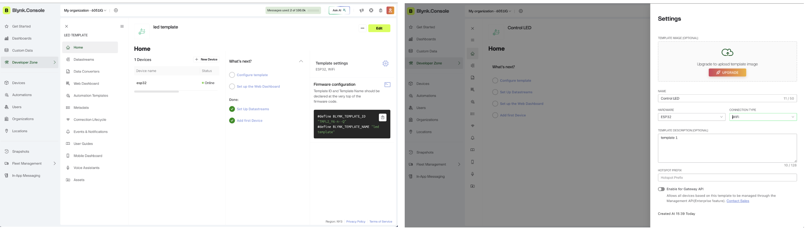
P 1.2 ~ DATASTREAM/Flujo de datos . (Blynk Web Console)
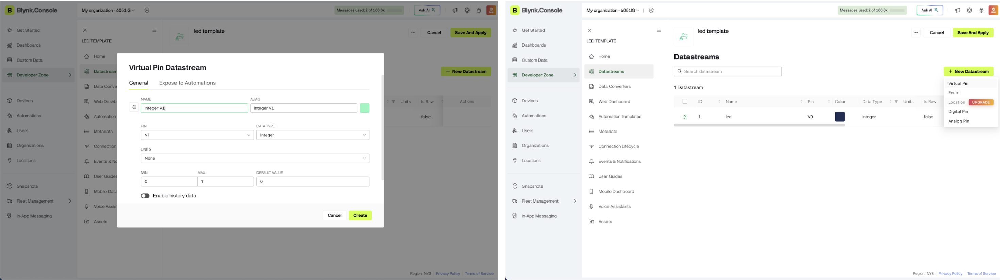
P 1.3 ~ DEVICE CREATE . (Blynk Web Console)
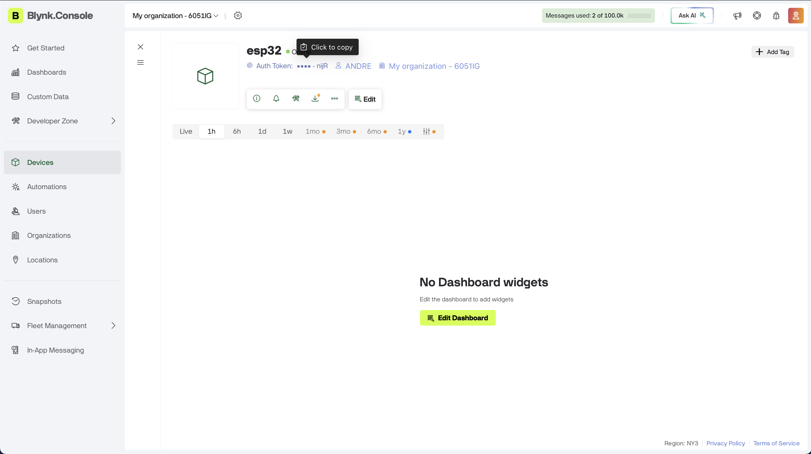
PASO 2 ~ ARDUINO IDE SETTING UP
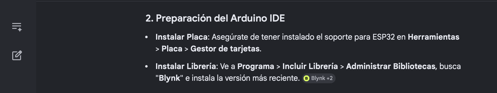
P 2.1 ~ ESP32 BOARD INSTALLED . (Arduino IDE) P 2.2 ~ LIBRARY INSTALL . (Arduino IDE)
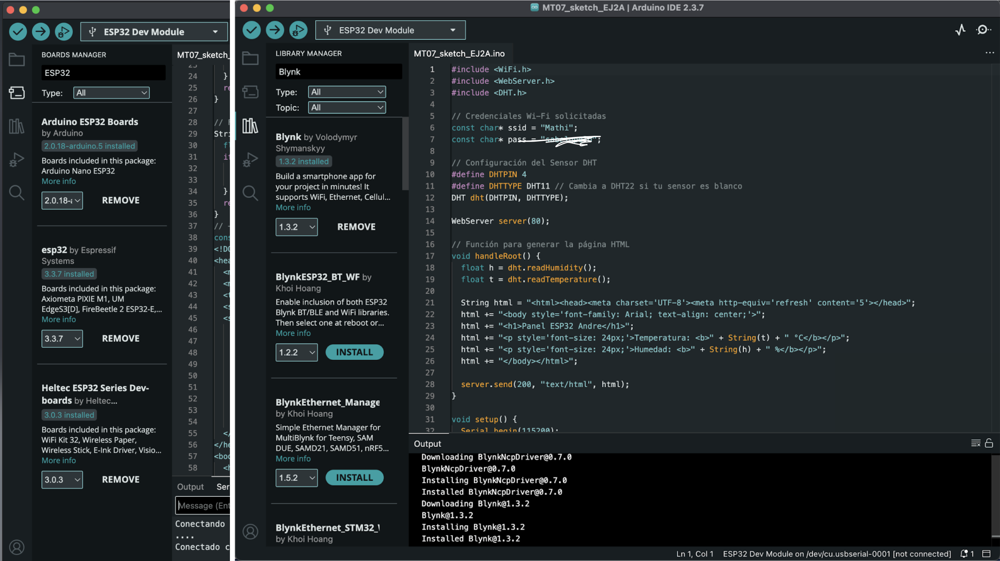
PASO 3 ~ PROGRAMMING CODE
P 3.1 ~ CODE #1 . (Arduino IDE)
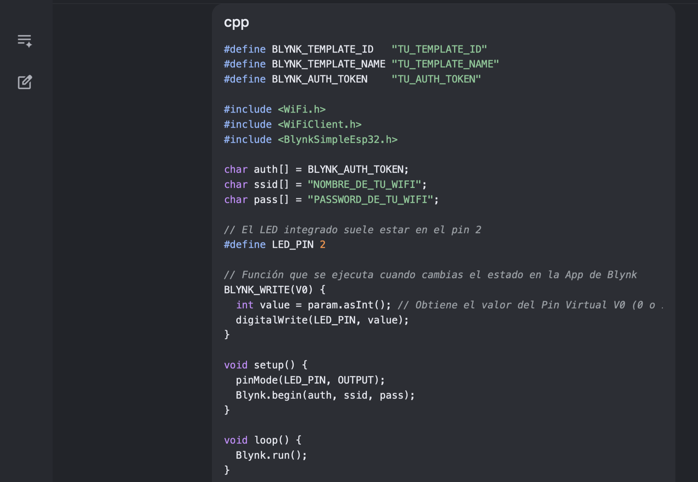
PASO 4 ~ APP MOBILE SETTING
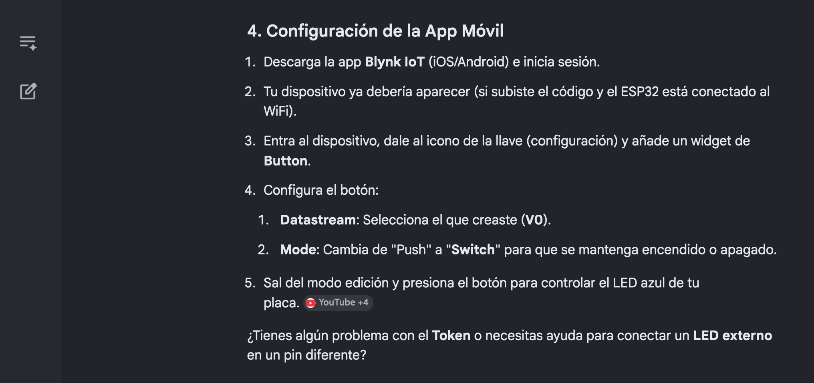
P 4.1 ~ BUTTON SETTING . (Blynk Mobile)
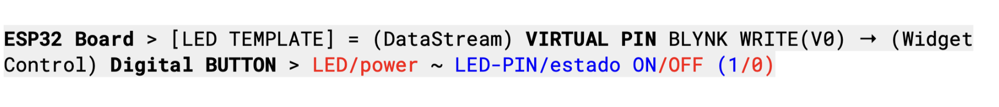
ESP32 Board > [LED TEMPLATE] = (DataStream) VIRTUAL PIN BLYNK WRITE(V0) → (Widget Control) Digital BUTTON > LED/power ~ LED-PIN/estado ON/OFF (1/0)

P 4.1 ~ WEB DASHBOARD . DEVICE SAVE/APPLY . (Blynk Web Console)
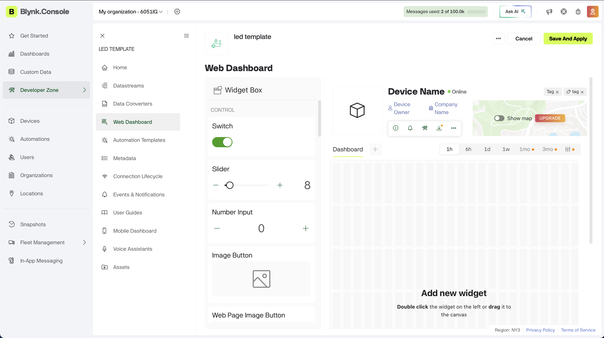
CONEXIONES . #1
Una vez completadas correctamente las 4 etapas del proceso, se logra la RESPUESTA de confirmación para la COMUNICACIÓN DIGITAL: transferencia de señal/dato, expresado con el control de encendido (‘SWITCH’ VIRTUAL BUTTON) de leds integrados LED/power vs LED-PIN/estado ON/OFF, a partir de la combinación exitosa de la configuración entre componentes del sistema electrónico: WI-FI network + (hardware) MICROCONTROLADOR ESP32 + (software) [ BLYNK WEB + BLYNK MOBILE + ArduinoIDE & CODE ]
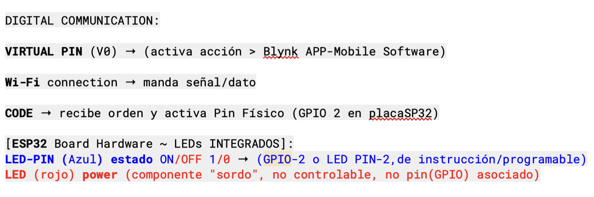
DIGITAL COMMUNICATION:VIRTUAL PIN (V0) → (activa acción > Blynk APP-Mobile Software)Wi-Fi connection → manda señal/datoCODE → recibe orden y activa Pin Físico (GPIO 2 en placaSP32)
ESP32 Board Hardware ~ LEDs INTEGRADOS:LED-PIN (Azul) estado ON/OFF 1/0 → (GPIO-2 o LED PIN-2,de instrucción/programable)LED (rojo) power (componente "sordo", no controlable, no pin(GPIO) asociado)
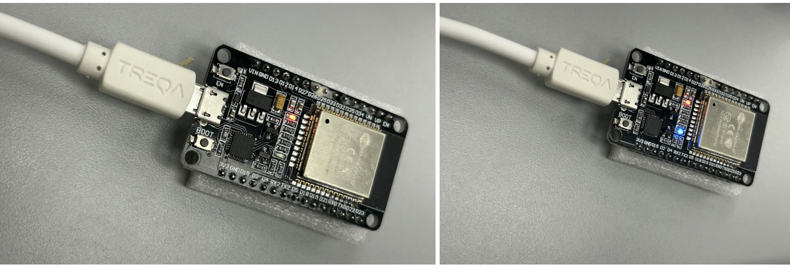